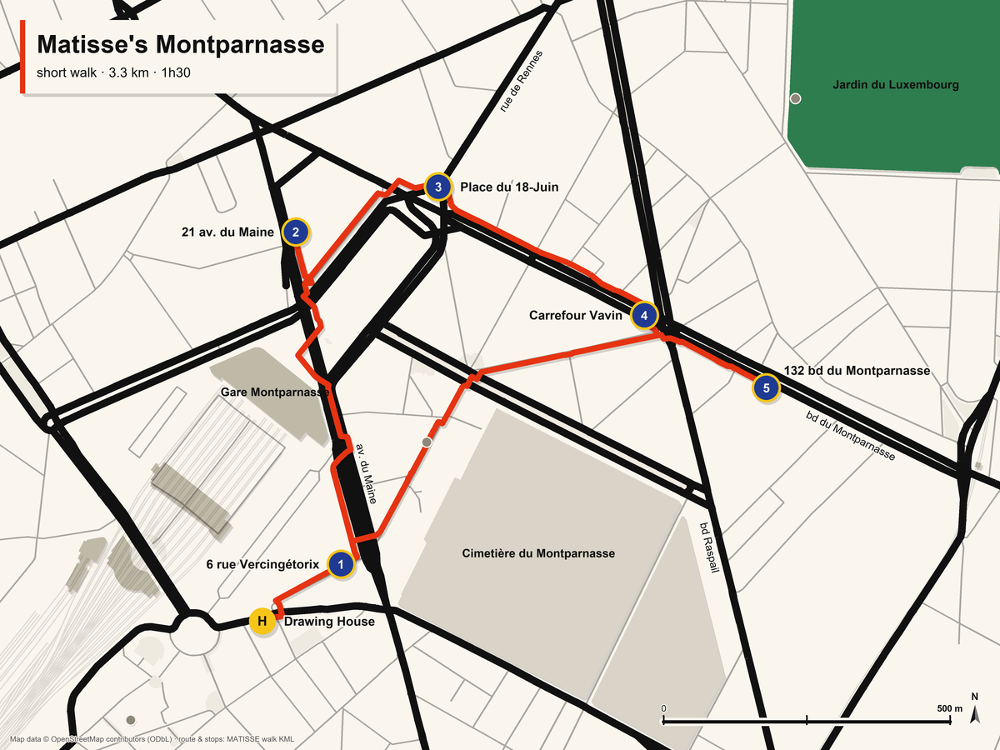

Drawn from OpenStreetMap data (© OpenStreetMap contributors) and our measured route; every pin sits on its address.
Stops
- HDrawing House21 rue Vercingétorix · leave 17:45
- 1Gauguin's street6 rue Vercingétorix · 17:50 · 198 m from the hotel
- 2The artists' canteen21 avenue du Maine · 18:07 · 712 m
- 3The old station and the AmericansPlace du 18-Juin-1940 · 18:20 · 416 m
- 4Carrefour VavinBalzac, Le Dôme, La Rotonde, La Coupole · 18:33 · 501 m
- 5Matisse's front door132 boulevard du Montparnasse · 18:45 · 258 m
- HBack to the hotelvia rue de la Gaîté · 1.2 km · about 19:12
The long version
With a fast group and a dry evening, the loop can take in the Steins' two doors between stops 3 and 4: 4.4 km, back about 19:41.